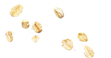
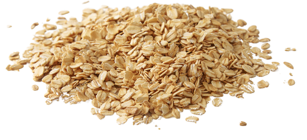
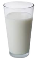
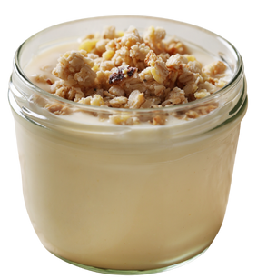

EXCEPTIONAL QUALITY
It's time for a
good drink

Cicipi kelezatan oat milk, susu alternatif yang ramah bagi yang intoleran laktosa & alergi. Lezat & penuh nutrisi, membantu memperkuat tulang dan menurunkan kolesterol. Mulailah petualangan kesehatanmu dengan oat milk hari ini!
Get started
Scroll Down
Oat milk, pengganti susu sapi terbuat dari oat, air, & bahan tambahan lainnya. Nutrisinya mencakup 120 kkal, 5 gram lemak, 16 gram karbohidrat, 3 gram protein, & 2 gram serat. Produk oat milk sering diperkaya dengan kalsium, kalium, zat besi, vitamin B, A, & D.
Oat Drink
Rp9.600Oatly
Rp62.000Oat History
Oat berasal dari wilayah Eropa Timur dan Asia Barat Daya. Tanaman ini telah dikenal dan digunakan oleh manusia sejak zaman Neolitikum Oat menyebar ke Eropa Utara, terutama Skotlandia, di mana tanaman ini ditemukan tumbuh dengan baik di iklim yang lebih dingin. Oat (Avena sativa) adalah tanaman biji-bijian tahunan yang termasuk dalam keluarga Poaceae. Oat digunakan dalam berbagai cara, mulai dari bubur hingga roti, dan bahkan sebagai pakan ternak, terutama untuk kuda.

Steps of manufacturing oatmilk


01

Panen terjadi setiap tahun ketika biji oat mencapai kematangan dan dikumpulkan untuk diproses.
02

Masukkan oat dan air ke dalam blender lalu tambahkan sejumput garam atau pemanis sampai tercampur dengan baik.
03

Tuang hasil blender ke dalam wadah lalu tambahkan topping untuk sajian oatmilk yang sempurna